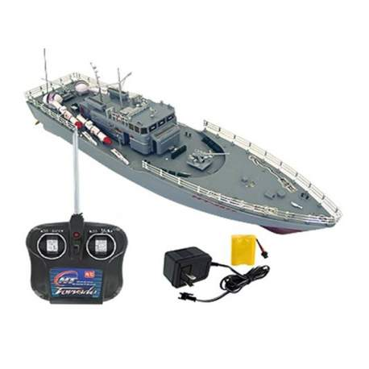

Barcos
Barco de Guerra BISMARCK RC-Boo / ARR 1:200 CARSON

El Bismarck ofrece una longitud de alrededor de 130 cm, muchos detalles. La estructura de la plataforma superior del modelo a escala 1: 200 muestra salvamento y botes, torretas, superestructuras y equipos técnicos. La barandilla de metal fotograbado. Tres motores eléctricos tipo 380 impulsan las hélices, que están controladas en paralelo por un acelerador de 50 A resistente al agua. Detrás se encuentra, como en el original, el mecanismo de dirección, que también está controlado por un servo de 3 kg resistente al agua. Se sirve terminado y pintado, solo se debe instalar una emisora RC. Tres aberturas permiten el acceso a los componentes RC.
Marca: BISMARCK
Categoria: Barco de Guerra
Longitud: 1250mm
Escala: 1:200
Peso: 2960g
Precio: 1100€
BARCO TORPEDERA RC
- Buque de Guerra de R.C.
- Velocidad:5 Km/h
- Batería de 250 mAh 6V con cargador
- Con luces y muchos detalles
- Todas las funciones incluyendo marcha atrás
Marca: NT
Categoria: Barco de Guerra
Dimensión: 50x13x16 cm
Escala: 1:115
Peso: 1000g
Precio: 55€